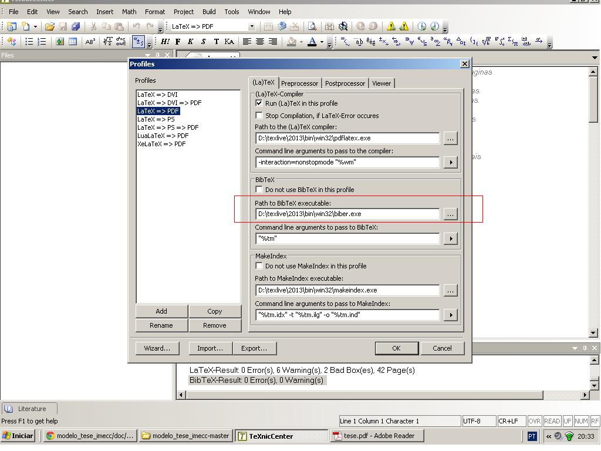
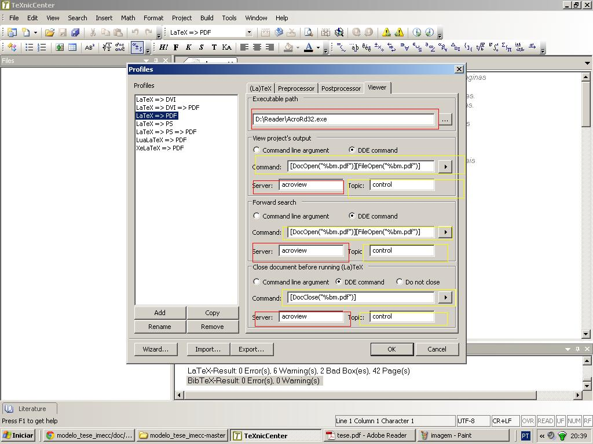

Configuração TeXnicCenter
Trocando o bibtex pelo biber
Abaixo temos a configuração para que as bibliografias possam aparecer utilizando o editor TeXnicCenter. Note na figura abaixo que trocamos D:\texlive\2013\bin\win32\bibtex.exe por D:\texlive\2013\bin\win32\biber.exe.
Configuração para visualizar pdf com o acrobat
Os retângulos vermelhos abaixo serão mudados de acordo com o caminho do seu visualzador, por exemplo:
- Caminho do executável: C:\Program Files\Adobe\Reader 10.0\Reader\AcroRd32.exe;
- Server: AcroViewR10.
Observação: Essas alterações nos retângulos são válidas para visualizar ".pdf".
 Escrito por Júnior Soares.